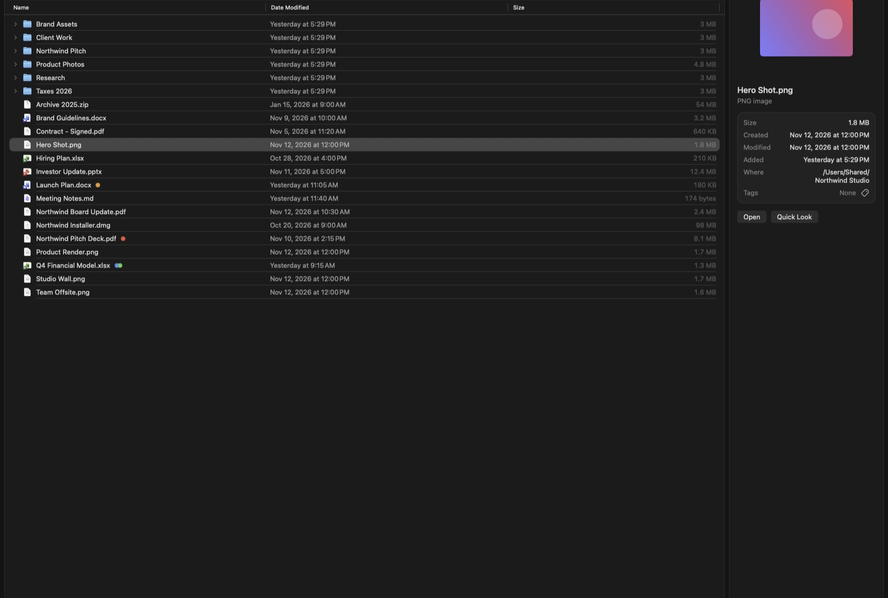
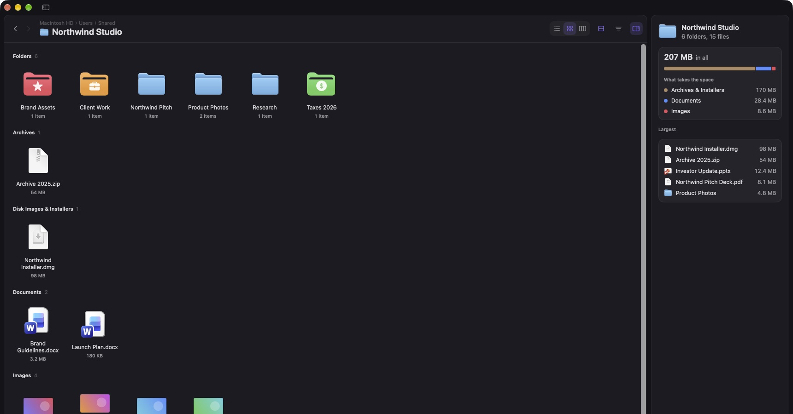
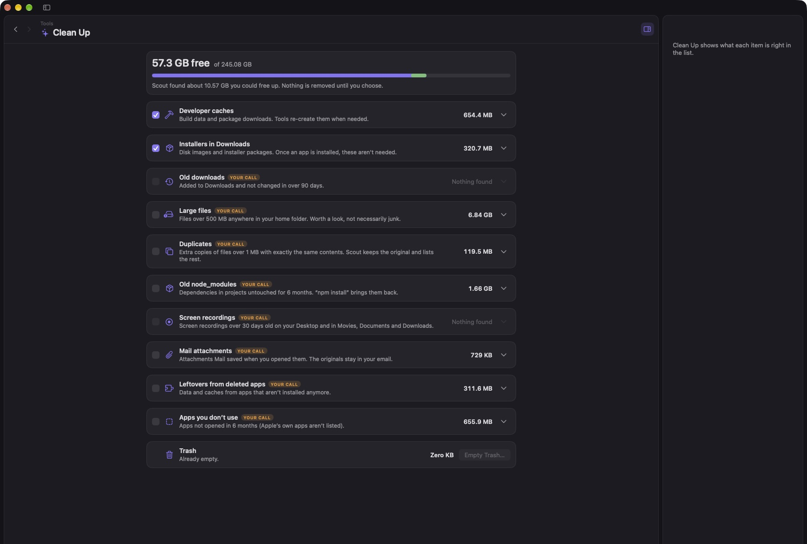

Jump from anywhere
⌥Space opens Scout's palette over any app. Pick a folder and you're there; press Esc to go back to what you were doing.
⌥ Space⌘K

Scout is a native file browser for macOS. Press ⌥Space from any app, type a few letters, and you're in the folder. It groups and tidies what piles up, and shows you what's taking the space.
Free and open source · macOS 26 and later · Apple silicon and Intel · How to install

Scout keeps a private index of your folders, ranked by how often you use them. Files come from Spotlight, by name or by what's inside.
⌥Space opens Scout's palette over any app. Pick a folder and you're there; press Esc to go back to what you were doing.
Everything you opened or downloaded lately, grouped by day. Any folder can split into blocks by kind, date, size or tag, and remembers how you left it.
Color and label folders, tag files the same way Finder does, gather a project's folders into a Workspace, and keep a Shelf for files you're collecting. List, icon and column views, with split panes for moving between two places.

Two folders side by side, each with tabs. F5 copies across, F6 moves.
Sorts loose files into PDFs, Images, Installers and more. You see the plan first; ⌘Z undoes it.
Stack steps (replace with regex, add text, change case, new names like {created} {n}), preview every name, and save it as a preset.
Progress with Cancel for big copies, and a clear Replace, Keep Both or Skip when names clash.
Rendered markdown, highlighted code, scrollable PDFs and video, right in the info panel.
See which iCloud and OneDrive files are online-only, and download or free them up.
Developer caches, old installers, duplicates, forgotten node_modules and apps you don't use. Scout explains each one, ticks only the safe ones, and moves your picks to the Trash so nothing is gone for good.

Turn on Developer tools in Settings: branch and status in the header, badges on changed files, one-key Open in Terminal and Open in Editor, and everything Homebrew and npm installed, with what's outdated.
A branch chip with ahead and behind counts, and every changed file in the repo on one page.
Tern, Ghostty, iTerm or Terminal. Cursor, VS Code, Zed or Xcode. Pick them once in Settings.
Homebrew and npm in one list with sizes and updates. Scout hands you the upgrade command; it never runs installs itself.
The scout tool ranks folders the same way the palette does. scout:// links, Raycast commands, and Shortcuts actions drive the app from anywhere.
Type a name to select it, use the arrow keys in every view, and press Esc to back out of anything. Every shortcut can be changed in Settings.
See everything that's been added, changed, fixed and removed since the first version.